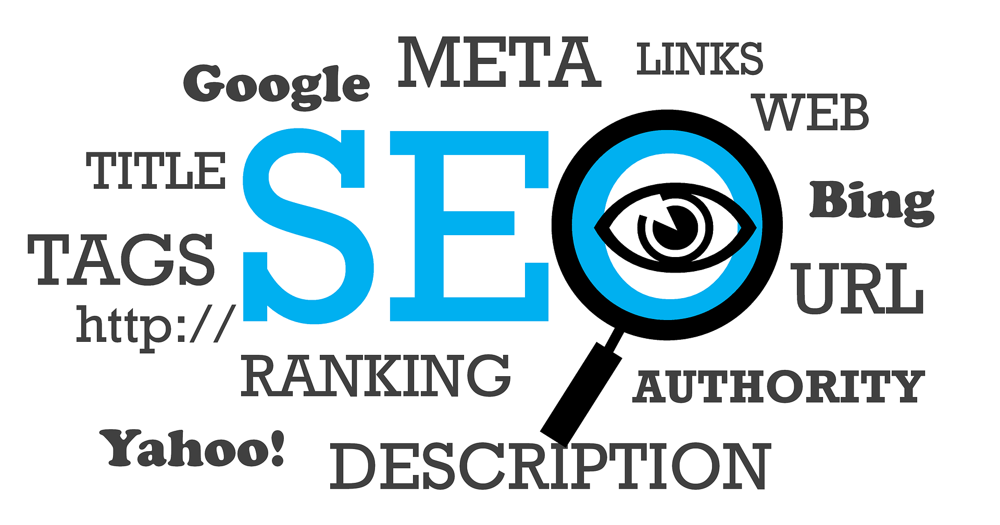

SEO対策について

SEO対策??
SEO対策とは、インターネット検索結果で自身のWebサイトを上位表示させたり、より多く露出させるための対策のことです。 「検索エンジン最適化（SEO[Search Engine Optimizationの略]」の意味も持ち合わせてます。 こうした意味から、検索エンジンを考慮してWebサイトを最適化することがSEO対策の根本となります。 検索エンジンは、YahooやBingなど世の中に複数存在しますが、その中でも最もユーザーに利用されてるGoogleの検索エンジンを考慮してWebサイトを最適化することが、SEO対策の基本となります。 なぜかというと、利用ユーザーが多い検索エンジンで上位表示できれば、その分見込める検索からのアクセス流入も大きくなるからです。 こうした理由をもとに、実際にGoogleの検索エンジンを考慮してWebサイトを最適化するには、Google独自の検索アルゴリズムに習ったSEO対策を行う必要があります。 Googleの検索アルゴリズムは、200以上の要素から構成されており、その中でも「コンテンツ」と「被リンク」が最重要な要素となります。 なので、これらの要素を満たし、かつユーザーの利便性を最優先にしながら、Webサイトを最適化することがSEO対策において重要となります。